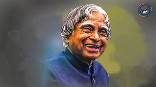

Dr.A.P.J.Abdul Kalam
Missile Man Of India,The People's President

If you FAIL, never give up because F.A.I.L. means "First Attempt in Learning". END is not the end; in fact E.N.D. means "Effort Never Dies". If you get NO as an answer, remember N.O. means "Next Opportunity". All Birds find shelter during a rain. But Eagle avoids rain by flying above the Clouds.
- 1931-Born in Rameswaram,Tamil Nadu.
- 1954-Graduated in Physics from University of Madras.
- 1960-Graduated in Aerospace Engineering from Madras Institute of Technology.
- 1961-Joined DRDO as a scientist.
- 1969-Joined Space Research at ISRO.
- 1990-Became the project Director for India's First Indegenous Satellite Program.
- 1950-Was involved in the development of several Indegenous Missiles for India like Agni, Prithvi.
- 1981-Awarded Padma Bhushan.
- 1990-Awarded Padma Vibhushan.
- 1992-Chief Advisor for the India's Nuclear Program.
- 1997-Awarded Bharat Ratna.
- 2002-Became 11th President of India.
- 2015-The People's President passes away while doing what he loved the most, addressing students.
To succeed in life and achieve results, you must understand and master three mighty forces - desire, belief, and expectations.
For further information visit This link
WE ARE PROUD OF YOU SIR.JAI HIND